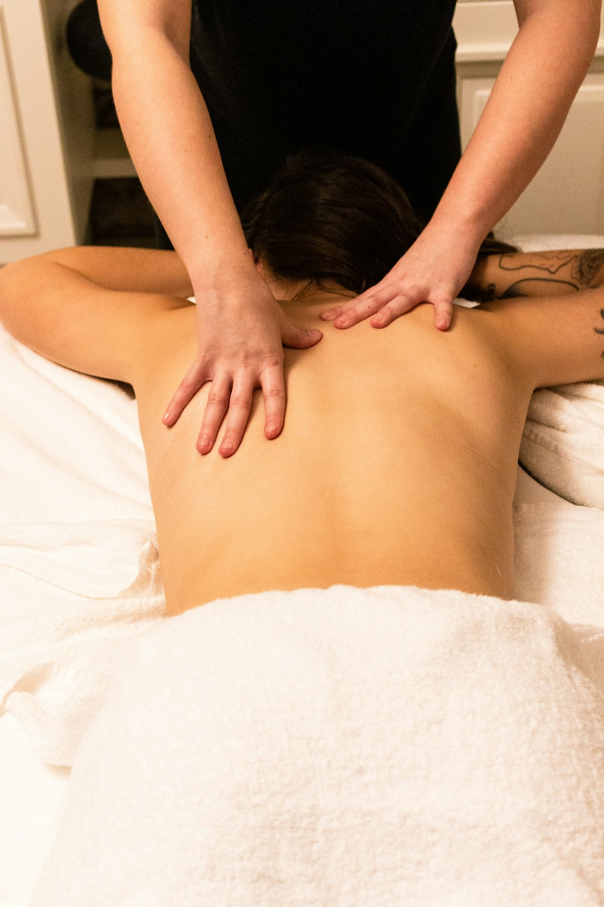
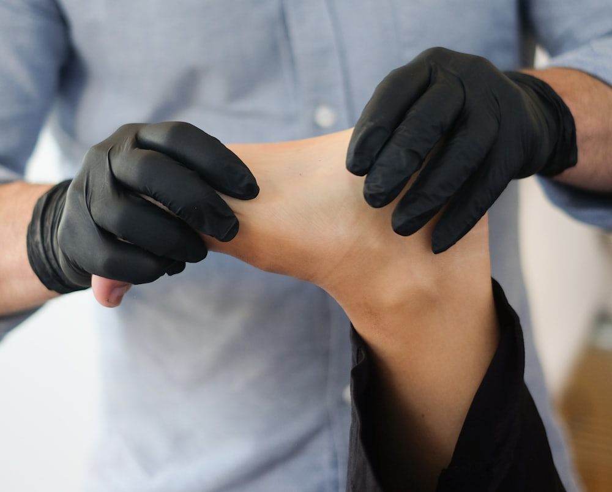
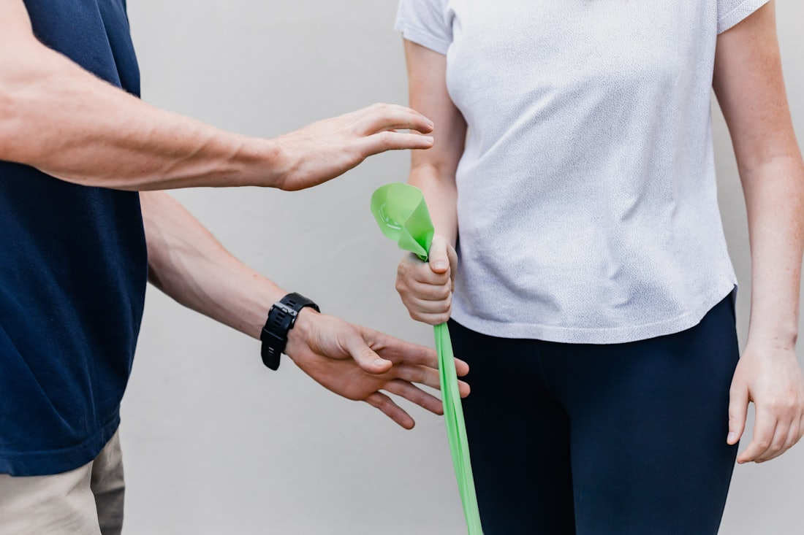

Klassische Massage
Die Basis bei allgemeinen Verspannungen. Ganzer Rücken, Nacken, Schultern — mit anpassbarem Druck.
45 · 60 Min.
ab CHF 110.–
Praxis in Musterstadt
Wir behandeln, was vom Sitzen, vom Training und vom Alltag übrig bleibt — gezielt, nachvollziehbar und mit einem Befund, den Sie verstehen.

Erstbehandlung inkl. Befund — 60 Minuten
Wo tut es weh?
Wählen Sie eine Region — Sie sehen sofort, welche Behandlung dafür in Frage kommt, wie lange sie dauert und ob die Zusatzversicherung mitzahlt.
Bei steifem Nacken sitzt die Ursache meist in wenigen verhärteten Punkten im Trapezius. Wir lösen sie gezielt statt grossflächig zu kneten.
Über die Zusatzversicherung abrechenbar
Diesen Termin anfragenBehandlungen
Jede Behandlung beginnt mit einem Befund. Wenn etwas nicht in unseren Bereich gehört, sagen wir das — und verweisen weiter.
Die Basis bei allgemeinen Verspannungen. Ganzer Rücken, Nacken, Schultern — mit anpassbarem Druck.
Gezielter Druck auf verhärtete Punkte, die Schmerzen an ganz anderer Stelle auslösen. Kurz unangenehm, danach spürbar freier.
Vor dem Wettkampf lockernd, danach regenerierend. Auch bei Läuferknie, Tennisarm und Achillessehnen-Beschwerden.

Arbeitet über die Füsse auf den ganzen Körper. Hilft vielen bei Schlafproblemen und innerer Unruhe.
Sanfte Grifftechnik bei Schwellungen — nach Operationen, bei schweren Beinen oder in der Schwangerschaft.

Wir behandeln nicht die Stelle, die weh tut — sondern die, die schuld ist.
Krankenkasse
Die Praxis ist beim Erfahrungsmedizinischen Register (EMR) anerkannt. Damit übernehmen die meisten Zusatzversicherungen einen Teil der Kosten — je nach Modell 70 bis 90 Prozent.
Beispielangaben für diese Demo. Die Vergütung hängt immer vom gewählten Zusatzversicherungsmodell ab — fragen Sie im Zweifel kurz bei Ihrer Kasse nach, bevor Sie kommen.
Die erste Sitzung
Wo genau, seit wann, wobei schlimmer? Dazu ein paar Bewegungstests. Am Ende wissen Sie, woher es kommt.
Gearbeitet wird an der Ursache, nicht nur am Schmerzpunkt. Sie sagen jederzeit, wenn der Druck zu stark ist.
Zwei bis drei Übungen für zu Hause, aufgeschrieben. Ohne sie kommt die Verspannung meist zurück.
Wer behandelt
„Die meisten kommen zu spät. Nicht, weil sie faul sind — sondern weil ihnen niemand gesagt hat, dass Nackenschmerzen kein normaler Teil des Arbeitens sind."
Preise
Alle Preise inklusive Befund und Übungsanleitung. Abrechnung nach der Behandlung, per Karte, TWINT oder Rechnung.
| Behandlung | Dauer | Zusatzversicherung | Preis |
|---|---|---|---|
| Erstbehandlung inkl. BefundEinmalig beim ersten Besuch | 60 Min. | meist vergütet | CHF 140.– |
| Klassische MassageRücken, Nacken, Schultern | 45 Min. | meist vergütet | CHF 110.– |
| Klassische MassageGanzkörper | 60 Min. | meist vergütet | CHF 135.– |
| Triggerpunkt-TherapieGezielt, meist 3–5 Sitzungen | 45 Min. | meist vergütet | CHF 110.– |
| SportmassageVor oder nach dem Wettkampf | 60 Min. | meist vergütet | CHF 140.– |
| Manuelle LymphdrainageBei Schwellungen | 60 Min. | meist vergütet | CHF 135.– |
| FussreflexzonenGanzkörperwirkung über die Füsse | 45 Min. | meist vergütet | CHF 105.– |
| EntspannungsmassageOhne therapeutisches Ziel | 60 Min. | nicht vergütet | CHF 120.– |
| Kurzfristige AbsageWeniger als 24 Stunden vorher | — | nicht vergütet | 50 % |
Häufige Fragen
Termin
Wir melden uns an Werktagen innerhalb von 24 Stunden mit einer Bestätigung zurück. Für kurzfristige Termine rufen Sie besser an.
VITA Therapeutische Massage
Werkstrasse 8
8400 Musterstadt
3 Gehminuten vom Bahnhof. Zwei Parkplätze im Hof, Einfahrt über die Werkstrasse.